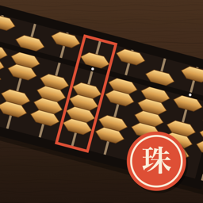

珠で答え合わせするフラッシュ暗算
答えたあと、そろばんの珠が1口ずつ動いて答え合わせ。まちがえたら「どの口で外れたか」を見せる、フラッシュ暗算の練習です。
画面に数が1つずつ出て、すぐ消えます。出た数を全部足した答えを入れます。そろばんを習っている子の毎日の練習にも、大人の頭の体操にも使えます。
- 珠で答え合わせ。答えると、そろばんの絵の珠が1口ずつ動いて、途中の合計を見せます。1口ずつ進める・もどす・自動で流す、ができます
- どの口で外れたか分かります。答えがちがうと、出た数とあなたの答えから「3口目の 47 を入れ忘れたかも」「十の位へ繰り上がる1が抜けたかも」「38 を 36 と見たかも」などを計算で見つけ、その口に朱の札を付けます
- もう一度見られます。答える前に1回、答え合わせのあとは何回でも、同じ問題を見直せます（ゆっくりも）
- 同じ段のまま続けて回せます。1セット 5・10・20問を、はじめの画面にもどらず続けて出します
- 段は1段〜10段と「自分で決める」（桁 1〜4・口の数 2〜20・1口 0.2〜3秒・引き算をまぜる）。段はこのアプリの目安で、検定の級とは関係がありません
- 記録：段ごとの正解の割合・いちばん続いた正解と、外れたわけの数（自分のくせ）
- 登録・課金・通知はありません。記録はこの端末の中だけに保存します。画面のいちばん下に小さな広告が出ます（1問ごとに広告をはさまず、画面いっぱいの広告・動画の広告は出しません）